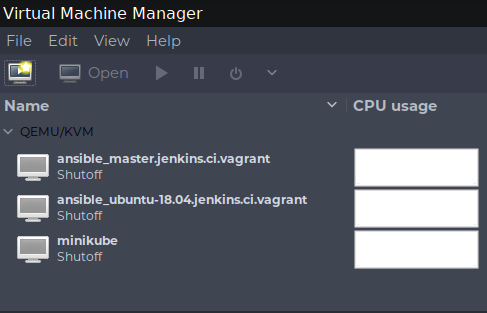
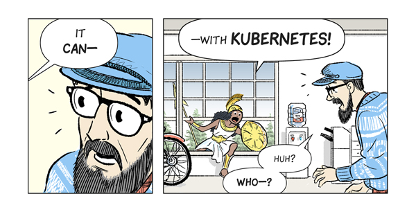

Loving DevOps by Distrusting Everything
Tyler Langlois
Principal Software Engineer @ Elastic
30 May, 2019
whoami
- Devops/software engineering at Elastic
- Miscellaneous experience ranging from building datacenters to webapps
- Would love to talk to you about ARM, functional programming, Boise tech, and my dog Morty
I apologize in advance
$ sudo rpm -i st2common-0.11.0-6.noarch.rpm
error: Failed dependencies:
python(abi) = 2.7 is needed by st2common-0.11.0-6.noarch
$ docker run hello-world Unable to find image 'hello-world:latest' locally Pulling repository docker.io/library/hello-world Network timed out while trying to connect to https://index.docker.io/v1/repositories/library/hello-world/images. You may want to check your internet connection or if you are behind a proxy.
error: unknown filesystem. grub rescue>
DevOps Friction
These things are:
- annoying
- a waste of our attention
- the reason we're employed
Friction
In physics, a spherical cow in a vacuum is easy to simulate.
In operations, deployment, development, and other high-level workflows are easy if nothing ever breaks
Emotional Friction
Suffering through broken things constantly… is not fun
Get greasy
It's not only about being less miserable!
- Less breakage = more uptime
- More uptime = more solutions, less break/fix
Never trust a computer
Friction, waste, downtime, you ulcer - whatever you call it, how do we mitigate it?
Navel-gazing-driven development
What can we learn from the past decade of operational trends?

Distrusting your installation

Distrusting your hardware

Distrusting the operating system

Distrusting your container runtime
The natural conclusion
Isn't it about resource efficiency?
Bin Packing
…using a new operating system each time isn't efficient
$ docker images | sort -k7 -h | awk '{ print $NF; }' \ | uniq | tr '\n' ' ' | fold -s -w 40 SIZE 1.84kB 109MB 127MB 160MB 191MB 195MB 202MB 206MB 288MB 298MB 390MB 594MB 644MB 645MB 685MB 697MB 706MB 711MB 750MB 752MB 812MB 842MB 879MB 917MB 918MB 922MB 929MB 935MB 1.06GB 1.07GB 9.56GB
Learning from history
Common factors
Practices that were repeated, scaled up, or focused on
Repeatability
"Can I recreate this if:"
- It breaks and I need to build a new one?
- I need to build more to scale out?
I've forgotten what the steps are?
- Virtual Machine images
- Container images
Kubernetes pods (or, modern-day "have you tried rebooting it?")
Processes as Artifacts
How do you record, version, and share operational knowledge?
- The rise of configuration management
- Codifying imperative tasks
APIs over hands on hardware
- Runbooks as Ansible playbooks or Rundeck jobs
- Recording history like traditional devs do in VCS/git history
Next-generation: Kubernetes operators
More Abstraction
Executables → Entire Machines → Load Balancers → All Operations
- From bare-metal hypervisors to Kubernetes: API s
- ISOs → Config Management → Declarative (yaml, cloud-config, AMIs)
Everybody wants the Heroku/Travis CI experience
Let's practice extreme distrust
Wisdom of the ancients to apply:
- Repeatability
- Codified process
Abstraction
Contain your enthusiasm
Version incompatibilities everywhere
Terraform doesn't allow running any operations against a state that was written by a future Terraform version. The state is reporting it is written by Terraform '0.11.1'.
Level 1: Explicit versioning
Maybe?
$ cat .tool-versions python 3.6.0 helm 2.8.2 terraform 0.11.0
Level 2: Contain It!
Only prerequisite is Docker, everyone runs the same bits.
$ docker run --rm --interactive \ hashicorp/terraform:0.11.1 \ plan
Level 3: Stop running it!
- Drive all changes with a typical CI/CD deployment workflow!
planyour pull requestsapplyon merge to master

Distributing Distrust
Not if your service will die, but when
Yo, I heard you like to distribute your services
Congratulations, now your problem is CAP
Consensus: It's probably worth it
Today's platforms assume a many-replica architecture
kubernetes, EC2 ASGs, GCP instance groups, nomad, consul, Elasticsearch, etcd, etc. etc.
General Principles
- Is there a distributed version of
$xI can use? - Failing that, can I distribute it myself?
What a beautiful, modern, only kind-of-broken world
- Object storage (minio?)
- SQL (cockroachdb?)
- Search (elasticsearch?)
- Ops (kubernetes, nomad)
Secrets (vault)
Alerting
I tend to build systems that (wrongly) assume:
- I have arrived in my seat and read my email by 9am.
- I have entered an on-call rotation once I'm well-fed and prepared at 1pm.
- One alert comes in that I can resolve without assistance during this period that I know how to solve.
Done until next time!
Reality
Abstractions
- I don't care that a request 502'd. I care that the rate is 100% above what is was 60 seconds ago.
- Don't tell me that a disk is 100% full, warn me now that it'll be 100% in 48 hours.
- I do not care if a webserver container is at high load. I care if end-user response time P95 is >=5s.
Living well in the shell
Hypothesis: the command line is currently the absolute best user interface to a computer for technical operators
…because…
Tangible artifacts
…because this is tangible instead of telling the new team member "click on this page in the AWS console"
aws --region us-east-1 ec2 describe-instances \ --filter "Name=tag:Name,Values=*myhost*" \ | jq -r ' .Reservations \ | map(.Instances) \ | flatten \ | map(select(.State.Name | contains("running"))) '
Repeatable
So, so many things
- Chances are high you'll see similar problems > 1 time
- Ad-hoc fixes become serviceable solutions
- Composing your commands = force multiplier
- Tab completion superpowers
Blurring the line between work and programming (control structures, variables, etc.)
tl;dr
Was there any point to this presentation?
Don't let the computers win
Turn frustrations into technical achievements!

Hedge your bets against the computers
Assume everything is going to break, all the time, and merrily build around your pessimism
@retry(wait=wait_exponential(multiplier=1, min=1, max=60)) def perform_something_over_the_network():
Build with a face towards the future
- Express infrastructure in code where possible, then markup, then literate documentation
- Factor out operations that must be completed by a human at a keyboard
- Build services that can assume failure ranging from OS to OSI layer 7